Accessible Components
This page is a case study of the accessibility of search boxes across different applications, comparing their usability on computers and mobile devices. We then propose alternative designs for better accessiblity!
Chosen Component: Search Box
The search box was chosen as it is an ubigious part of computer
and mobile applications. Consideration of the usability and accesibility of this component
has the potential to make applications better for a wide variety of people.
For each component, hover over/tab onto component to see it in action!
Component A: Slack
Slack is a software that is used commonly both on desktop and mobile. This was chosen to review a program where both desktop and mobile versions are used as equally as often.
On Computer
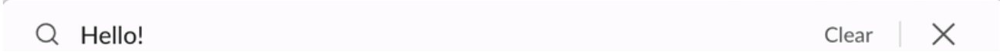On Mobile
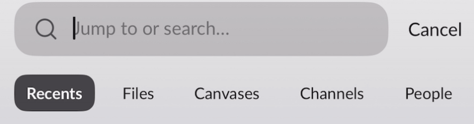Component B: Google Docs
Google Docs is a software that is mostly used on desktop, while it does have a mobile version as well. This was used to highlight an example in which the desktop app is more popular.
On Computer
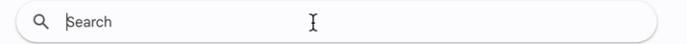On Mobile
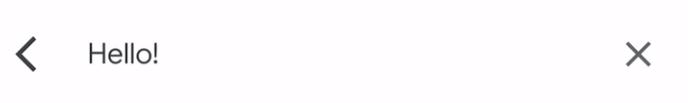Component C: Messages
Messages is an app that most people used mainly on their phones. While there is a desktop version of it, it is less commonly used, and this example is used to highlight those types of applications.
On Computer
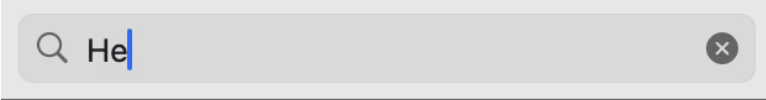On Mobile
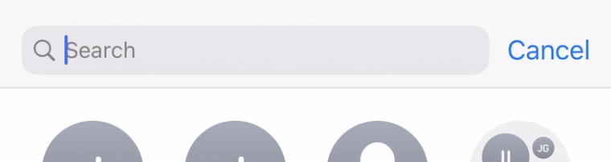Reviewing Inputs
First, we review the inputs of each component. Inputs are ways to interact with the object. In here, we consider the touchbad, keyboard input, and touch input.
| A: Slack Search Box | B: Docs Search Box | C: Messages Search Box | |
|---|---|---|---|
| Touchpad | - Shortcut pops up when hovered. - Normal allowance - No icon change on hover |
- Icon changes when hovered. - Normal allowance |
- Icon changes when hovered. - Large allowance |
| Keyboard | - Has a shortcut (Command + G) but not intuitive. - Easy to input after command |
- Tab is used to move around screen - A little confusing to see what is being selected - Tab cannot move backward |
- Tab cannot be used, types a message instead - No other keyboard inputs |
| Touch | - Small click allowance - Responsive animation. |
- Hard to differentiate search input boundary. | - Search box hidden; user must pull down to reveal it. |
Reviewing Outputs
Next, we review the outputs of each component. Outputs are changes in visual style such as colors, borders, or texts. It could also mean hidden outputs such as alt text, which can be revealed with a screen reader.
| A: Slack Search Box | B: Docs Search Box | C: Messages Search Box | |
|---|---|---|---|
| On Click and Input | - Seaech navigation bar pops up - Shows suggestions on keyboard input |
- Search box changes color (grey to white) - Search box has boundary after click - Shows suggestions as a pop up, box changes shape |
- Search box has blue border on click - Shows suggestions without changes to search box |
| On Hover | - Shows key command on hover - No other visual changes |
- Input bar shows on screen - No other changes |
- Input bar shows on screen - No other changes |
| On Touch | - Touch shows input bar - No change in text - Change in screen aligment |
- Touch changes entire view of box - Text changes to show action allowed |
- Dragging automatically aligns user to text box - Shows input bar, can understand what you are typing |
| With Screenreader | - Reads the entire menu instead of just the search box - Difficult to tell what is being selected |
- Reads it as a menu box - Difficult to tell what is being selected |
- Reads not only the name of component, but gives instruction on how to interact with it |
State Models
Next, we review the state models of both mouse users and keyboard users.
Mouse User
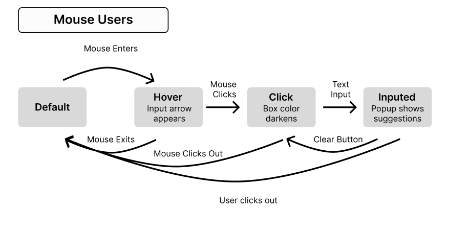Keyboard User
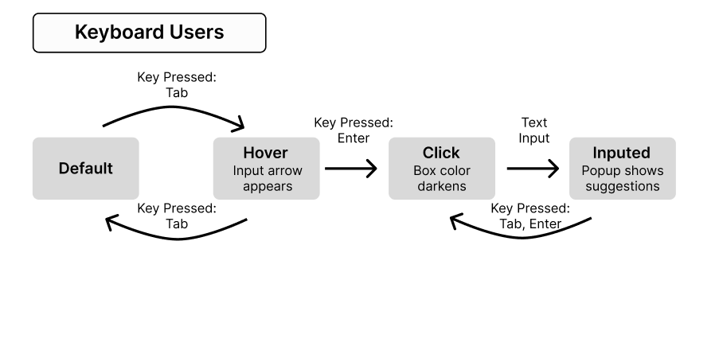State Models: Renewed
Next, we review the state models of
Mouse User
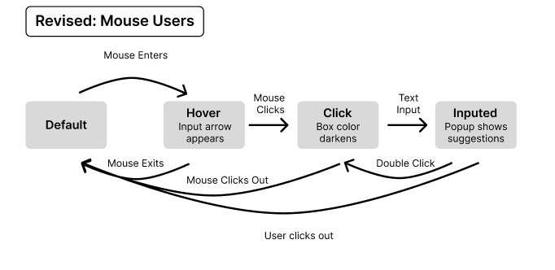I changed it so that a double click would clear the input. While this is a handy feature, the tradeoff is that is takes time to learn this feature. However, it provides more usability to people with lower motor control.
Keyboard User
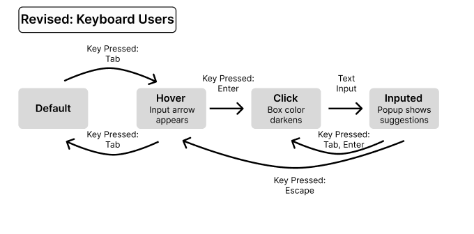I changed it so that the keyboard user can press escape to exit out of the selected componet. This is handy because there previously was no return sequence with keyboard. However, this use of escape is not traditional yet and users might mistakingly click it and have an unexpected result.
Proposed Redesigns
Finally, we provide re-designs of two views of components.
Initial State
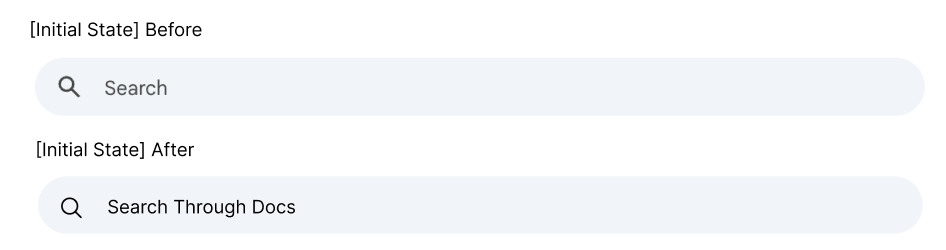Before my change, the intitial state had no info on what it would search for. However, other similar Google applications would specifiy the application (for example, Search for Mail). Therefore, I added text that would tell the user what the search is for. It also has the added benefit of adding info in the voiceover.
Hover State
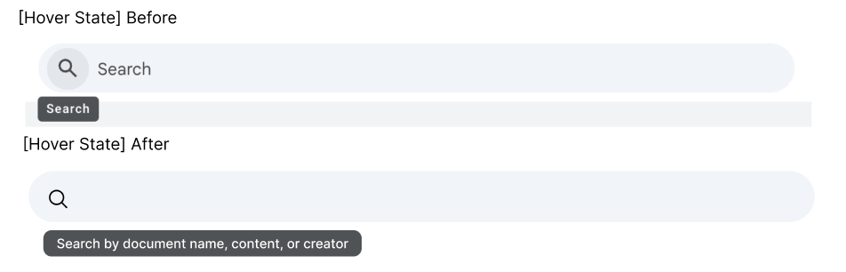In the original design, there was a search button when hovering that had no functionality when the search box had no text. I proposed a redesign where that search button would not be shaded in thus showing it has no interaction. It also had a popup that would provide no context, so I added a pop-up that would tell the user how to inteact with the search bar. The removal of the clickable search button would also not confuse users using a screenreader with a empty button.
Reflections
From this review, we can take away key points.
Overall Notes
- Some components, such as Messages, was really good about providing enough context within the voice over to allow
a user to inteact with it with no visual component. I tried to replicate this in my design in a component which
did not have such a good voiceover context.
- However, I failed to account how the added feature would interact with a keyboard-focused user. It takes away a button that
was meaningless in feature, but when the pop-up was added, there is difficulty in figuring out
where exactly the user would have to tab to to see the popup.
- Kat Holmes, a designer, mentioned disabilities as 'mismatches' of a user's bodies and an environment.
In my design, we strive to solve a mismatch between a user unable to navigate a search bar because of not
knowing what to search by having a popup that is screen-accessibile to describe how to use it.
Other Specific Notes
- One example of how the tab input changes experiences negatively for users with imparements positively is that it makes
the process very slow. Shortcuts changes experiences positivety in the way that it is much quicker, but it should not be forgotten that there is a large learning curve to this.
- In the context of accesibility features, I do think voice over features are prioritized. This is both a positive and negative thing
as since voice overs have so many plugs-in for users to use, the actual building of the website isn't considering this audience enough.
This includes including lots of images and leaving alt text tags, but forgetting that the alt text tags
are not enough for a visually impared user to fully understand what is happening.